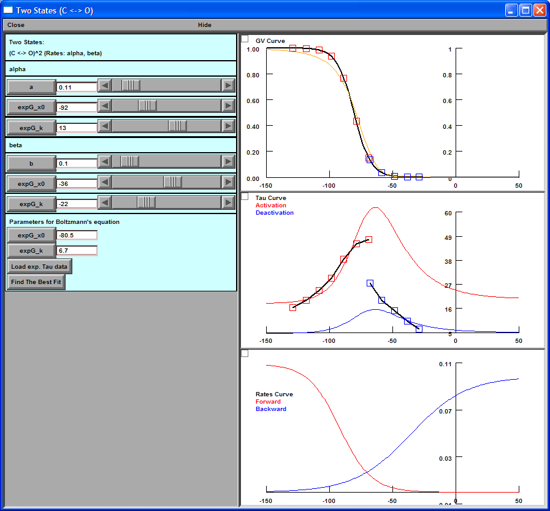

Run "Main.hoc".
Click "Two states (C <-> O)2" button.
Click "Load exp. Tau data" button.
Select "MageeTau.dat" and click "OK".
Click "Find The Best Fit" button.

The Best Fit:
Alpha:
a = 0.1091
vhalf = -91.69 (mV)
k = 12.51 (mV)
Beta:
a = 0.09848
vhalf = -35.73 (mV)
k = -22.11 (mV)